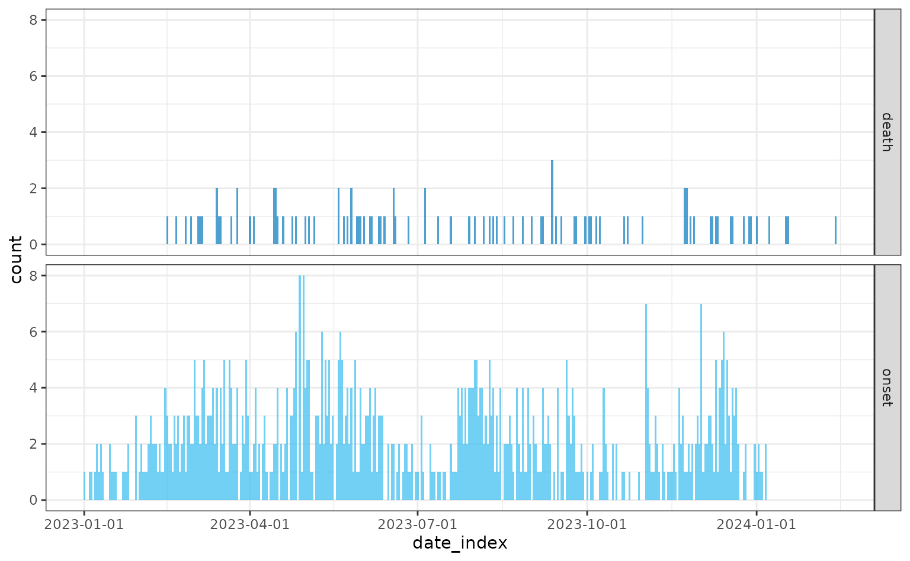
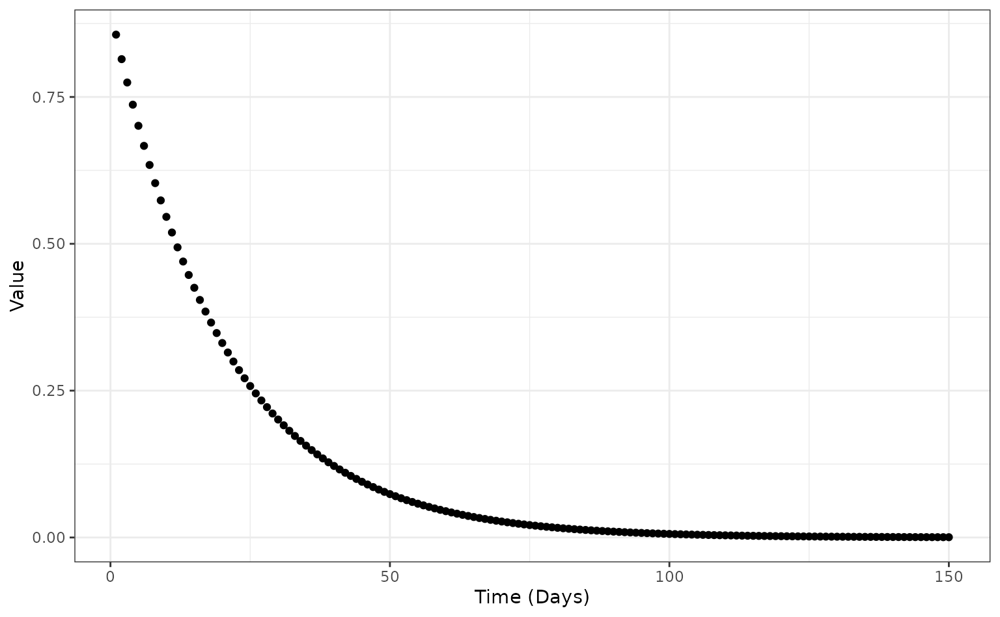

If you are unfamiliar with the {simulist} package or the
sim_linelist() function Get Started
vignette is a great place to start.
This vignette demonstrates how to simulate line list data using the time-varying case fatality risk and gives an overview of the methodological details.
The {simulist} R package uses an individual-based branching process simulation to generate contacts and cases for line list and contact tracing data. The time-varying case fatality risk feature provides a way to incorporate aspects of epidemics where the risk of death may decrease through time, potentially due to improved medical treatment, vaccination or viral evolution. It is also possible to model increasing case fatality risk through time, or a stepwise risk function where the risk of death shifts between states.
The time-varying case fatality risk implemented in this package is not meant to explicitly model these factors, but rather to give the user an option to more closely resemble fatality risk through the course of an epidemic, possibly because there is data on this, or just to simulate data that has these characteristics.
See the {epidemics} R package for a population-level epidemic simulation package with explicit interventions and vaccinations.
Given that setting a time-varying case fatality risk is not needed
for most use cases of the {simulist} R package, this feature uses the
config argument in the sim_*() functions.
Therefore, the time-varying case fatality risk can be set when calling
create_config() (see below for details).
library(simulist)
library(epiparameter)
library(tidyr)
library(dplyr)
#>
#> Attaching package: 'dplyr'
#> The following objects are masked from 'package:stats':
#>
#> filter, lag
#> The following objects are masked from 'package:base':
#>
#> intersect, setdiff, setequal, union
library(incidence2)
#> Loading required package: grates
library(ggplot2)First we will demonstrate the default setting of a constant case fatality risk throughout an epidemic.
We load the required delay distributions using the {epiparameter} package, by either manually creating them (contact distribution and infectious period), or load them from the {epiparameter} library of epidemiological parameters (onset-to-hospitalisation and onset-to-death).
contact_distribution <- epiparameter(
disease = "COVID-19",
epi_name = "contact distribution",
prob_distribution = create_prob_distribution(
prob_distribution = "pois",
prob_distribution_params = c(mean = 2)
)
)
#> Citation cannot be created as author, year, journal or title is missing
infectious_period <- epiparameter(
disease = "COVID-19",
epi_name = "infectious period",
prob_distribution = create_prob_distribution(
prob_distribution = "gamma",
prob_distribution_params = c(shape = 3, scale = 3)
)
)
#> Citation cannot be created as author, year, journal or title is missing
# get onset to hospital admission from {epiparameter} database
onset_to_hosp <- epiparameter(
disease = "COVID-19",
epi_name = "onset to hospitalisation",
prob_distribution = create_prob_distribution(
prob_distribution = "lnorm",
prob_distribution_params = c(meanlog = 1, sdlog = 0.5)
)
)
#> Citation cannot be created as author, year, journal or title is missing
# get onset to death from {epiparameter} database
onset_to_death <- epiparameter_db(
disease = "COVID-19",
epi_name = "onset to death",
single_epiparameter = TRUE
)
#> Using Linton N, Kobayashi T, Yang Y, Hayashi K, Akhmetzhanov A, Jung S, Yuan
#> B, Kinoshita R, Nishiura H (2020). "Incubation Period and Other
#> Epidemiological Characteristics of 2019 Novel Coronavirus Infections
#> with Right Truncation: A Statistical Analysis of Publicly Available
#> Case Data." _Journal of Clinical Medicine_. doi:10.3390/jcm9020538
#> <https://doi.org/10.3390/jcm9020538>..
#> To retrieve the citation use the 'get_citation' functionWe set the seed to ensure we have the same output each time the vignette is rendered. When using {simulist}, setting the seed is not required unless you need to simulate the same line list multiple times.
set.seed(1)Constant case fatality risk
When calling the create_config() function the default
output contains a list element named
time_varying_death_risk set to NULL. This
corresponds to a constant case fatality risk over time, which is
controlled by the hosp_death_risk and
non_hosp_death_risk arguments. The defaults for these two
arguments are:
- death risk when hospitalised (
hosp_death_risk):0.5(50%) - death risk outside of hospitals (
non_hosp_death_risk):0.05(5%)
In this example we set them explicitly to be clear which risks we’re
using, but otherwise the hosp_death_risk,
non_hosp_death_risk and config do not need to
be specified and can use their default values.
For all examples in this vignette we will set the epidemic size to be between 500 and 1,000 cases, to ensure that we can clearly see the case fatality patterns in the data.
See the Get Started vignette section on Controlling Outbreak Size for more information on this.
linelist <- sim_linelist(
contact_distribution = contact_distribution,
infectious_period = infectious_period,
prob_infection = 0.5,
onset_to_hosp = onset_to_hosp,
onset_to_death = onset_to_death,
hosp_death_risk = 0.5,
non_hosp_death_risk = 0.05,
outbreak_size = c(500, 1000),
config = create_config()
)
# first 6 rows of linelist
head(linelist)
#> id case_name case_type sex age date_onset date_reporting
#> 1 1 Douglas Carter suspected m 40 2023-01-01 2023-01-01
#> 2 2 Demetrice Harding probable m 12 2023-01-04 2023-01-04
#> 3 4 Pernell Steele probable m 45 2023-01-05 2023-01-05
#> 4 6 Sumbula al-Yusuf probable f 36 2023-01-07 2023-01-07
#> 5 7 Xin Geronimo probable m 42 2023-01-09 2023-01-09
#> 6 8 Haafil el-Salameh probable m 14 2023-01-08 2023-01-08
#> date_admission outcome date_outcome date_first_contact date_last_contact
#> 1 <NA> recovered <NA> <NA> <NA>
#> 2 <NA> recovered <NA> 2022-12-31 2023-01-04
#> 3 <NA> recovered <NA> 2022-12-30 2023-01-04
#> 4 2023-01-09 recovered <NA> 2023-01-03 2023-01-08
#> 5 <NA> recovered <NA> 2023-01-01 2023-01-06
#> 6 2023-01-09 recovered <NA> 2022-12-31 2023-01-08
#> ct_value
#> 1 NA
#> 2 NA
#> 3 NA
#> 4 NA
#> 5 NA
#> 6 NATo visualise the incidence of cases and deaths over time we will use the {incidence2} R package.
For more information on using {incidence2} to plot line list data see the Visualising simulated data vignette.
Before converting the line list <data.frame> to an
<incidence> object we need to ungroup the outcome
columns into their own columns using the {tidyr} and {dplyr} R packages from the Tidyverse.
linelist <- linelist |>
pivot_wider(
names_from = outcome,
values_from = date_outcome
) |>
rename(
date_death = died,
date_recovery = recovered
)
daily <- incidence(
linelist,
date_index = c(
onset = "date_onset",
death = "date_death"
),
interval = "daily",
complete_dates = TRUE
)
plot(daily)
Higher risk of case fatality
We repeat the above simulation but increase the risk of case fatality
for both hospitalised (hosp_death_risk) and
non-hospitalised (non_hosp_death_risk) individuals
infected.
linelist <- sim_linelist(
contact_distribution = contact_distribution,
infectious_period = infectious_period,
prob_infection = 0.5,
onset_to_hosp = onset_to_hosp,
onset_to_death = onset_to_death,
hosp_death_risk = 0.9,
non_hosp_death_risk = 0.75,
outbreak_size = c(500, 1000),
config = create_config()
)
#> Warning: Number of cases exceeds maximum outbreak size.
#> Returning data early with 1026 cases and 1994 total contacts (including cases).
head(linelist)
#> id case_name case_type sex age date_onset date_reporting date_admission
#> 1 1 Lara Pickering confirmed f 42 2023-01-01 2023-01-01 2023-01-05
#> 2 2 Sidnee Jensen probable f 25 2023-01-06 2023-01-06 2023-01-09
#> 3 4 Allison Denbow confirmed f 64 2023-01-07 2023-01-07 <NA>
#> 4 6 Noora al-Ahmadi probable f 46 2023-01-09 2023-01-09 <NA>
#> 5 8 Legend Tracy confirmed m 78 2023-01-08 2023-01-08 <NA>
#> 6 10 Cory Wilson suspected m 13 2023-01-15 2023-01-15 <NA>
#> outcome date_outcome date_first_contact date_last_contact ct_value
#> 1 recovered <NA> <NA> <NA> 22.9
#> 2 died 2023-02-26 2022-12-31 2023-01-03 NA
#> 3 died 2023-01-27 2023-01-01 2023-01-08 22.9
#> 4 died 2023-01-23 2023-01-04 2023-01-07 NA
#> 5 recovered <NA> 2023-01-05 2023-01-11 26.4
#> 6 recovered <NA> 2023-01-06 2023-01-11 NA
linelist <- linelist |>
pivot_wider(
names_from = outcome,
values_from = date_outcome
) |>
rename(
date_death = died,
date_recovery = recovered
)
daily <- incidence(
linelist,
date_index = c(
onset = "date_onset",
death = "date_death"
),
interval = "daily",
complete_dates = TRUE
)
plot(daily)Continuous time-varying case fatality risk
Now we’ve seen what the constant case fatality risk simulations look like, we can simulate with a time-varying function for the risk.
This is setup by calling the create_config() function,
and providing an anonymous function with two arguments,
risk and time, to
time_varying_death_risk. This function will then use the
relevant risk (e.g. hosp_death_risk) and the time an
individual is infected and calculates the probability (or risk) of
death.
The create_config() function has no named arguments, and
the argument you are modifying needs to be matched by name exactly (case
sensitive). See ?create_config() for documentation.
config <- create_config(
time_varying_death_risk = function(risk, time) risk * exp(-0.05 * time)
)Here we set the case fatality risk to exponentially decrease through time. This will provide a shallow (monotonic) decline of case fatality through the simulated epidemic.
exp_df <- data.frame(
time = 1:150,
value = config$time_varying_death_risk(risk = 0.9, time = 1:150)
)
ggplot(exp_df) +
geom_point(mapping = aes(x = time, y = value)) +
scale_y_continuous(name = "Value") +
scale_x_continuous(name = "Time (Days)") +
theme_bw()
The time-varying hospitalised case fatality risk function
(config$time_varying_death_risk) throughout the epidemic.
In this case the hospitalised risks (hosp_death_risk) are
at their maximum value at day 0 and decline through time, with risk
approaching zero at around day 100.
Advanced
The time-varying case fatality risk function modifies the the death
risk specified by hosp_death_risk and
non_hosp_death_risk. In this example, the user-supplied
hosp_death_risk and non_hosp_death_risk are
the maximum values, because the user-supplied time-varying function is
declining over time, however, a user-supplied function may also increase
over time, or fluctuate. The requirements are that the time-varying case
fatality risk for both hospitalised and non-hospitalised infections must
be between 0 and 1, otherwise the function will error.
In the example below hosp_death_risk is 0.9
and non_hosp_death_risk is 0.75, and the
time-varying case fatality risk function is an exponential decline. This
means that on day 0 of the epidemic (i.e. first infection seeds the
outbreak) the risks will be 0.9 and 0.75. But
any time after the start of the epidemic
()
the risks will be lower, and when the exponential function approaches
zero the risk of a case dying will also go to zero.
Simulating with the time-varying case fatality risk:
linelist <- sim_linelist(
contact_distribution = contact_distribution,
infectious_period = infectious_period,
prob_infection = 0.5,
onset_to_hosp = onset_to_hosp,
onset_to_death = onset_to_death,
hosp_death_risk = 0.9,
non_hosp_death_risk = 0.75,
outbreak_size = c(500, 1000),
config = config
)
head(linelist)
#> id case_name case_type sex age date_onset date_reporting
#> 1 1 Thomas Velasquez probable m 59 2023-01-01 2023-01-01
#> 2 2 Demeakie Williams confirmed f 2 2023-01-06 2023-01-06
#> 3 3 Marquille Neal confirmed m 14 2023-01-02 2023-01-02
#> 4 6 Hector Perez probable m 49 2023-01-07 2023-01-07
#> 5 8 Carlos Botello confirmed m 22 2023-01-08 2023-01-08
#> 6 11 Raakaan al-Younes confirmed m 40 2023-01-04 2023-01-04
#> date_admission outcome date_outcome date_first_contact date_last_contact
#> 1 <NA> died 2023-01-19 <NA> <NA>
#> 2 2023-01-09 died 2023-02-01 2022-12-30 2023-01-07
#> 3 <NA> died 2023-01-31 2022-12-31 2023-01-04
#> 4 <NA> died 2023-01-26 2023-01-05 2023-01-08
#> 5 2023-01-11 died 2023-01-22 2023-01-03 2023-01-08
#> 6 <NA> died 2023-01-13 2022-12-27 2023-01-06
#> ct_value
#> 1 NA
#> 2 26.2
#> 3 25.9
#> 4 NA
#> 5 26.0
#> 6 27.5
linelist <- linelist |>
pivot_wider(
names_from = outcome,
values_from = date_outcome
) |>
rename(
date_death = died,
date_recovery = recovered
)
daily <- incidence(
linelist,
date_index = c(
onset = "date_onset",
death = "date_death"
),
interval = "daily",
complete_dates = TRUE
)
plot(daily)
Stepwise time-varying case fatality risk
In addition to a continuously varying case fatality risk function, the simulation can also work with stepwise (or piecewise) functions. This is where the risk will instantaneously change at a given point in time to another risk level.
To achieve this, we again specify an anonymous function in
create_config(), but have the risk of a case dying set as
the baseline hosp_death_risk and
non_hosp_death_risk for the first 60 days of the outbreak
and then become zero (i.e. if an individual is infected after day 60
they will definitely recover).
config <- create_config(
time_varying_death_risk = function(risk, time) {
ifelse(test = time < 60, yes = risk, no = 0)
}
)
stepwise_df <- data.frame(
time = 1:150,
value = config$time_varying_death_risk(risk = 0.9, time = 1:150)
)
ggplot(stepwise_df) +
geom_point(mapping = aes(x = time, y = value)) +
scale_y_continuous(name = "Value") +
scale_x_continuous(name = "Time (Days)") +
theme_bw()The time-varying case fatality risk function
(config$time_varying_death_risk) for the hospitalised death
risk (hosp_death_risk) and non-hospitalised death risk
(non_hosp_death_risk) throughout the epidemic. In this case
the risks are at their user-supplied values from day 0 to day 60, and
then become 0 onwards.
Simulating with the stepwise time-varying case fatality risk:
linelist <- sim_linelist(
contact_distribution = contact_distribution,
infectious_period = infectious_period,
prob_infection = 0.5,
onset_to_hosp = onset_to_hosp,
onset_to_death = onset_to_death,
hosp_death_risk = 0.9,
non_hosp_death_risk = 0.75,
outbreak_size = c(500, 1000),
config = config
)
#> Warning: Number of cases exceeds maximum outbreak size.
#> Returning data early with 1004 cases and 1982 total contacts (including cases).
head(linelist)
#> id case_name case_type sex age date_onset date_reporting
#> 1 1 Ranny Tran confirmed m 23 2023-01-01 2023-01-01
#> 2 2 Safiyya el-Badour confirmed f 29 2023-01-05 2023-01-05
#> 3 3 Rachel Vu probable f 81 2023-01-17 2023-01-17
#> 4 5 Abdur Raheem al-Arshad suspected m 58 2023-01-19 2023-01-19
#> 5 6 Saleema al-Zaher confirmed f 79 2023-01-19 2023-01-19
#> 6 8 Nicholas Yazzie suspected m 44 2023-01-20 2023-01-20
#> date_admission outcome date_outcome date_first_contact date_last_contact
#> 1 <NA> recovered <NA> <NA> <NA>
#> 2 <NA> recovered <NA> 2022-12-29 2023-01-02
#> 3 <NA> recovered <NA> 2023-01-05 2023-01-07
#> 4 <NA> died 2023-01-30 2023-01-15 2023-01-18
#> 5 <NA> died 2023-02-19 2023-01-15 2023-01-22
#> 6 <NA> died 2023-02-02 2023-01-13 2023-01-19
#> ct_value
#> 1 27.7
#> 2 26.8
#> 3 NA
#> 4 NA
#> 5 28.1
#> 6 NA
linelist <- linelist |>
pivot_wider(
names_from = outcome,
values_from = date_outcome
) |>
rename(
date_death = died,
date_recovery = recovered
)
daily <- incidence(
linelist,
date_index = c(
onset = "date_onset",
death = "date_death"
),
interval = "daily",
complete_dates = TRUE
)
plot(daily)![Two histograms in a single column, showing the daily incidence of cases from symptom onset and incidence of deaths. The baseline case fatality risk for hospitalised individuals is 0.9 and the risk of non-hospitalised individuals is 0.75, and these change in a step-wise manner at day 60 of the epidemic. The y-axis is labelled 'count' and the x-axis is labelled 'date_index'. The plot shows fluctuating cases over time, and deaths only occuring early in the epidemic and no deaths later in the outbreak.](time-varying-cfr_files/figure-html/plot-onset-death-time-varying-cfr-stepwise-1.png)
The same stepwise function can also be used to specify time windows
were the risk of death is reduced. Here we specify the
hosp_death_risk and non_hosp_death_risk in the
first 50 days of the epidemic, then between day 50 and day 100 the risk
is reduced by half, and then from day 100 onwards the risk goes back to
the rates specified by hosp_death_risk and
non_hosp_death_risk.
config <- create_config(
time_varying_death_risk = function(risk, time) {
ifelse(test = time > 50 & time < 100, yes = risk * 0.5, no = risk)
}
)
stepwise_df <- data.frame(
time = 1:150,
value = config$time_varying_death_risk(risk = 0.9, time = 1:150)
)
ggplot(stepwise_df) +
geom_point(mapping = aes(x = time, y = value)) +
scale_y_continuous(name = "Value", limits = c(0, 1)) +
scale_x_continuous(name = "Time (Days)") +
theme_bw()The time-varying case fatality risk function
(config$time_varying_death_risk) which scales the
hospitalised death risk (hosp_death_risk) and
non-hospitalised death risk (non_hosp_death_risk)
throughout the epidemic. In this case the risks are at their maximum,
user-supplied, values from day 0 to day 50, and then half the risks from
day 50 to day 100, and then return to their maximum value from day 100
onwards.
Simulating with the stepwise time-varying case fatality risk:
linelist <- sim_linelist(
contact_distribution = contact_distribution,
infectious_period = infectious_period,
prob_infection = 0.5,
onset_to_hosp = onset_to_hosp,
onset_to_death = onset_to_death,
hosp_death_risk = 0.9,
non_hosp_death_risk = 0.75,
outbreak_size = c(500, 1000),
config = config
)
head(linelist)
#> id case_name case_type sex age date_onset date_reporting
#> 1 1 Kathryn Thurston confirmed f 35 2023-01-01 2023-01-01
#> 2 2 Kaatima al-Ahmed confirmed f 54 2023-01-02 2023-01-02
#> 3 4 Horatio Sobhi confirmed m 78 2023-01-03 2023-01-03
#> 4 5 Brittney Pollock probable f 16 2023-01-16 2023-01-16
#> 5 7 Esteidi Ayala Petrie confirmed f 31 2023-01-04 2023-01-04
#> 6 10 Brandon Sok confirmed m 36 2023-01-19 2023-01-19
#> date_admission outcome date_outcome date_first_contact date_last_contact
#> 1 <NA> recovered <NA> <NA> <NA>
#> 2 2023-01-04 died 2023-01-23 2023-01-01 2023-01-04
#> 3 <NA> died 2023-01-23 2022-12-28 2023-01-05
#> 4 <NA> recovered <NA> 2022-12-27 2023-01-03
#> 5 <NA> died 2023-01-09 2023-01-01 2023-01-04
#> 6 <NA> died 2023-02-11 2023-01-11 2023-01-19
#> ct_value
#> 1 23.1
#> 2 26.6
#> 3 27.2
#> 4 NA
#> 5 23.4
#> 6 28.2
linelist <- linelist |>
pivot_wider(
names_from = outcome,
values_from = date_outcome
) |>
rename(
date_death = died,
date_recovery = recovered
)
daily <- incidence(
linelist,
date_index = c(
onset = "date_onset",
death = "date_death"
),
interval = "daily",
complete_dates = TRUE
)
plot(daily)
The maximum case fatality risk for hospitalised individuals is 0.9
and for non-hospitalised individuals is 0.75, and these rates remain
constant from days 0 to 50, and then from days 50 to 100 the case
fatality risk is halved (i.e hosp_death_risk = 0.45 and
non_hosp_death_risk = 0.375), before going back to their
original risks from day 100 onwards.”
This vignette does not explore applying a time-varying case fatality
risk to age-stratified fatality risks, but this is possible with the
sim_linelist() and sim_outbreak() functions.
See the Age-stratified hospitalisation
and death risks vignette and combine with instructions from this
vignette on setting in a time-varying function using
create_config().
The implementation of the time-varying case fatality rate in the
simulation functions (sim_linelist() and
sim_outbreak()) is flexible to many functional forms. If
there are other ways to have a time-varying case fatality risk that are
not currently possible please make an issue or pull
request. Currently the hospitalisation risk is assumed constant over
time can cannot be adjusted to be time-varying like the death risk, if
this is a feature you would like included in the {simulist} R package
please make the request in an issue.